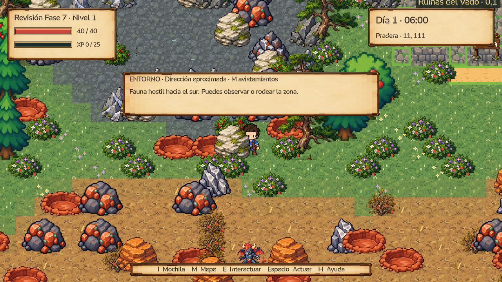
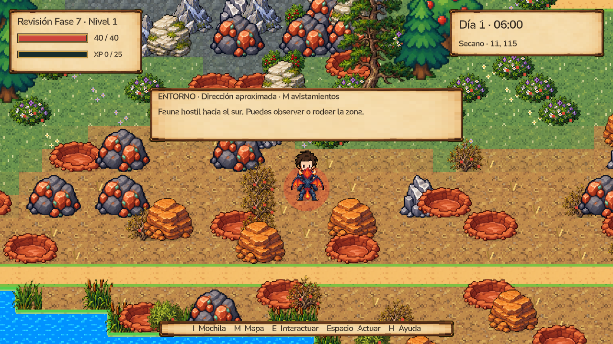
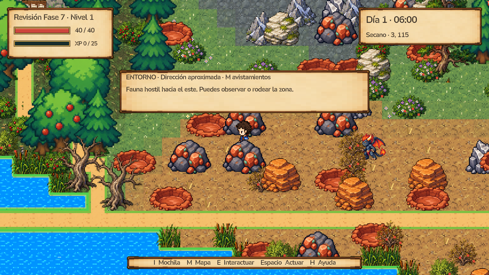

Cierre del alcance autorizado. Navegación corregida, avisos de amenazas reales y decisiones comprobadas con las mecánicas actuales. 97 comprobaciones finales sin fallos.
Revisión automatizada en la escena real, semilla 123, cámara ×3. Detectar, acercarse y retirarse usando movimiento y combate del juego: vida final 40/40. No sustituye una prueba humana. La amenaza continúa visible al final y el aviso sigue vigente.



Regreso: 20 atascos antes → 0 después. Persecución: 0 atascos en 10 casos. Sin cambios de balance. Rama independiente; sin merge a main.